Part A — The Power of Diffusion Models
In Part A, I build intuition for how diffusion models generate and edit images by explicitly implementing the core “noise ↔ denoise” mechanics. I start by visualizing the forward process, where a clean image is gradually corrupted by Gaussian noise according to a fixed schedule, and then show how a pretrained denoiser can reverse this process through iterative sampling. After validating the sampling loop on a real image (the Campanile), I use the exact same loop to generate images from pure noise. Finally, I demonstrate how the sampling dynamics can be steered with classifier-free guidance (CFG) and repurposed for image-to-image translation, including SDEdit-style projection, inpainting (RePaint-style constraint enforcement), and text-conditional edits.
A0. Setup + Prompt Embeddings
I use the two-stage DeepFloyd IF text-to-image pipeline: Stage I synthesizes a coarse 64×64 sample, and Stage II upsamples/refines it to 256×256. In this project, the text string is not fed to the diffusion model directly; instead it is converted into a high-dimensional prompt embedding (produced by a large text encoder). Because prompt encoding is relatively expensive, I precompute and cache embeddings once and reuse them throughout Part A (standard sampling, CFG, and all editing / illusion variants). I also fix the random seed (666) to ensure comparisons across settings isolate the effect of the algorithm (e.g., step count, CFG scale, noise strength), rather than randomness.
- Prompt embedding dictionary: I created a set of 16 prompts spanning photorealistic and artistic styles and generated their text embeddings ahead of time. This makes later sections much faster and keeps all experiments controlled (same prompt, same seed, different sampling method).
- Baseline prompts shown below: I generated examples from three prompts to establish a consistent reference point for later sections: a realistic image of a snowy owl perched on a branch during winter, a watercolor painting of a quiet village beside a calm river, and an artistic image of floating islands in a bright blue sky.
-
Inference steps: I sample both Stage I and Stage II using
num_inference_steps= 20 and 100 to compare the tradeoff between speed and refinement.
Observation: Increasing inference steps generally improves global coherence and reduces obvious artifacts because the model makes more incremental denoising updates. However, “more steps” does not always mean “more photorealistic.” In some cases, longer sampling can shift the image toward a more stylized look, reflecting the fact that diffusion sampling is a trajectory through a learned prior—not a simple post-processing denoise. The best step count therefore depends on the prompt and the desired aesthetic.
I reuse these baseline prompts (and the same seed) later so that changes in output can be attributed to the algorithmic choice (plain sampling vs. CFG vs. image-to-image) rather than random variation.
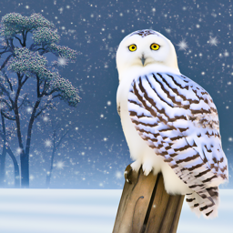
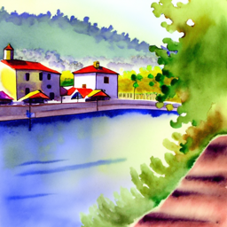
100 inference steps
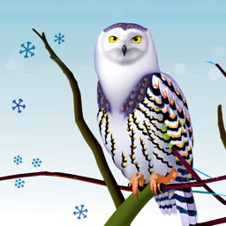
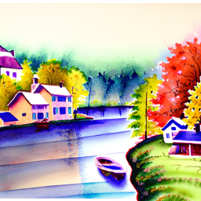
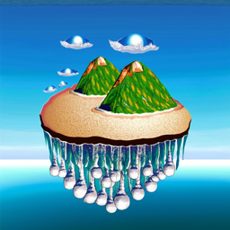
A1. Sampling Loops
A1.1 Implementing the Forward Process
The forward diffusion process produces a noisy image xt from a clean image x0 by mixing the original signal with Gaussian noise according to the noise schedule. Importantly, it is not “add noise and keep the image the same”—the clean image is also scaled down over time. Concretely, at timestep t: xt = √ᾱt · x0 + √(1 − ᾱt) · ε, where ε ~ N(0, I). Early timesteps have ᾱt close to 1, so the image is mostly intact; late timesteps have ᾱt near 0, so the result becomes nearly pure noise. To verify my implementation, I apply the forward process to the provided Campanile test image and visualize three increasing noise levels (t = 250, 500, 750), where structure gradually disappears as the noise term dominates.

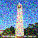
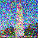
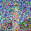
A1.2 Classical Denoising (Gaussian Blur)
As a baseline, I try to denoise the corrupted images using a classical Gaussian blur filter. Gaussian blur suppresses high-frequency components, which reduces some “speckle-like” noise, but it cannot distinguish noise from fine image details (edges, brick texture, thin lines). As the noise level increases, blur increasingly trades away real structure while still leaving behind low-frequency noise, so performance degrades rapidly—especially at high t where little recoverable signal remains.
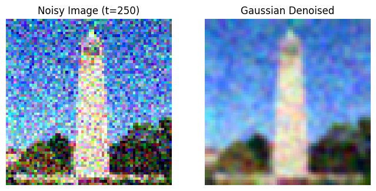
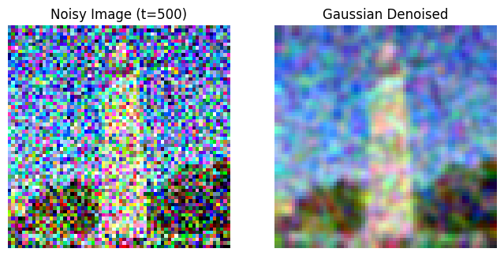
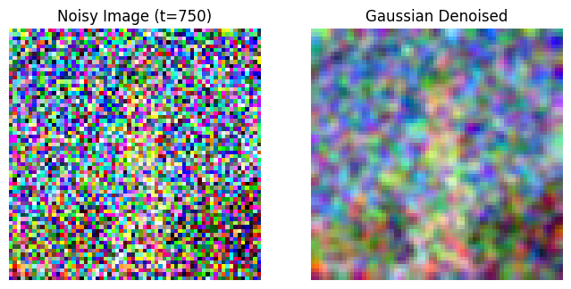
A1.3 One-Step Denoising (Pretrained Diffusion Denoiser)
Next, I use the pretrained DeepFloyd Stage-I UNet to perform a single denoising step. Given the noisy image xt, timestep t, and a text condition (here the provided embedding for “a high quality photo”), the UNet predicts the noise component ε̂(xt, t). I then form a one-step estimate of the clean image by “undoing” the forward mixing: x̂0 = (xt − √(1 − ᾱt) · ε̂) / √ᾱt. Even one step outperforms Gaussian blur because the model has learned a strong natural-image prior and can preserve edges while removing noise. However, one-step denoising is still imperfect at larger t because the model is intended to be applied iteratively, making many small corrections across the schedule.
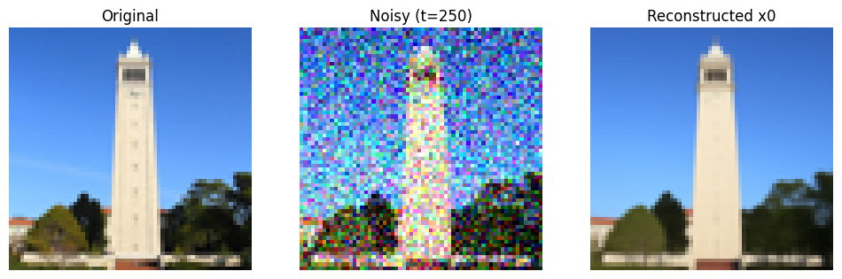
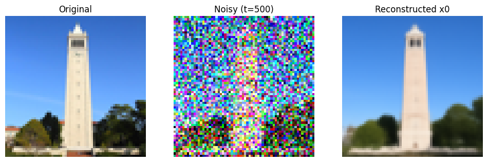
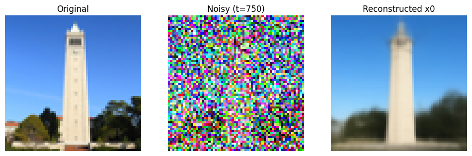
A1.4 Iterative Denoising
I then implement the full iterative reverse diffusion loop, which repeatedly predicts noise at the current
timestep and updates the sample toward lower-noise states. Compared to one-step denoising, the key advantage
is that each update operates in a regime the denoiser is trained for, gradually improving the sample rather
than attempting to “jump” directly to x0. Qualitatively, early iterations recover coarse layout
(large shapes / global contrast), while later iterations refine edges and textures.
Implementation detail: DeepFloyd’s UNet outputs a tensor with 6 channels (noise + variance). I use the first
3 channels as the noise estimate and pass the predicted variance through the provided helper to inject the
correct stochasticity for each reverse step (DDPM-style update).
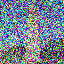
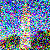
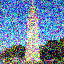
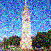
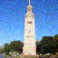

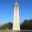
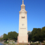
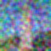
A1.5 Diffusion Model Sampling (From Pure Noise)
After validating the loop on a corrupted real image, I reuse the same iterative denoising procedure to sample from scratch by initializing xT as pure Gaussian noise. The model progressively “sculpts” this noise into a coherent image as t decreases. Following the instructions, I generate 5 samples using the (weak) generic prompt “a high quality photo”, which produces reasonable but sometimes ambiguous outputs—motivating the need for CFG in the next section.
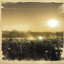
A1.6 Classifier-Free Guidance (CFG)
CFG improves prompt adherence by mixing an unconditional and conditional noise prediction. At each timestep, I run the UNet twice: once with the true prompt embedding (conditional) and once with the empty string prompt "" (unconditional). These produce ε̂cond and ε̂uncond, and the guided noise estimate is: ε̂ = ε̂uncond + s · (ε̂cond − ε̂uncond), where s is the guidance scale. Intuitively, ε̂uncond captures generic natural-image structure, while the difference term points in the “direction” that makes the image more consistent with the text. Larger s usually increases sharpness and semantic alignment, but can reduce diversity and sometimes introduce oversaturated / overly stylized artifacts if pushed too high.
A1.7 Image-to-Image Translation
Image-to-image translation can be viewed as “partial noising + controlled denoising” (SDEdit-style projection). Starting from a real input image x0, I first run the forward process to obtain xt at an intermediate noise level (chosen by an index i_start). I then denoise back toward x0 using the iterative reverse process. Lower noise strengths preserve the original geometry and layout; higher noise strengths give the model more freedom to reinterpret the image (structure, texture, lighting) according to the prior and prompt guidance.
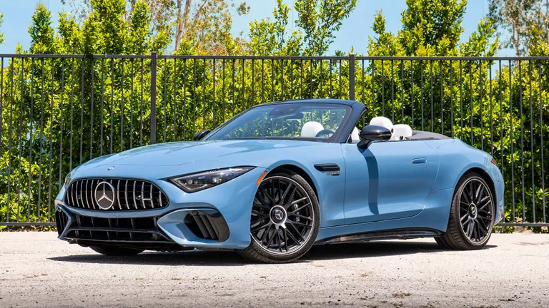
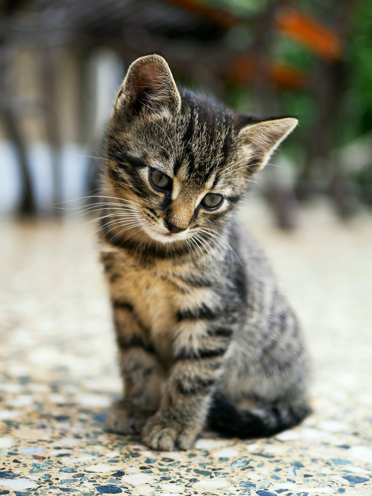
A1.7.1 Editing Hand-Drawn + Web Images
This “project to the natural image manifold” effect is especially striking for non-photorealistic inputs such as sketches, scribbles, or paintings. I apply the same SDEdit procedure to both (1) an image from the web and (2) my own hand-drawn input(s), sweeping multiple noise strengths to show the continuum from structure-preserving cleanup (low noise) to highly creative reinterpretation (high noise). This highlights how diffusion priors can act like a learned, data-driven “regularizer” that turns rough inputs into realistic-looking outputs without explicitly modeling edges or textures.
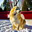
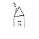
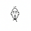
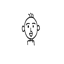
A1.7.2 Inpainting
Inpainting modifies the denoising loop by enforcing a hard constraint: pixels outside the edit region must remain consistent with the original image. Given a binary mask, I update the sample normally via reverse diffusion, but after each step I overwrite the known region with the original image corrupted to the same timestep. In other words, at timestep t I combine: (i) the model’s current prediction inside the hole, and (ii) the forward-noised original image outside the hole. This “re-noise then re-impose” constraint prevents the model from drifting in the preserved area while still letting it synthesize new content in the missing region that matches surrounding context and the prompt.
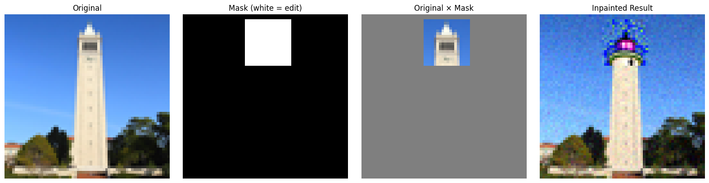
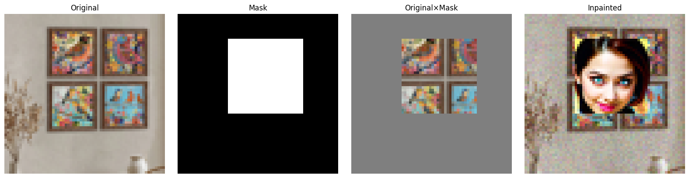
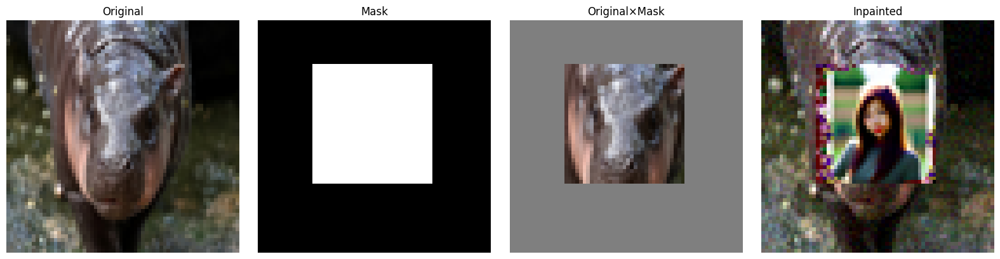
A1.7.3 Text-Conditional Image-to-Image Translation
Finally, I extend SDEdit by replacing the neutral condition with a custom text prompt and applying CFG during denoising. This turns the procedure from pure “projection onto the natural image manifold” into a controllable edit tool: the output tends to preserve large-scale structure at low noise, but gradually adopts the prompt’s style/semantics as noise increases (e.g., changing texture, material, lighting, or even adding/removing visual elements). Following the project checklist, I generate a sweep of edits across the required noise strengths to show this smooth tradeoff between fidelity to the input and adherence to the prompt.
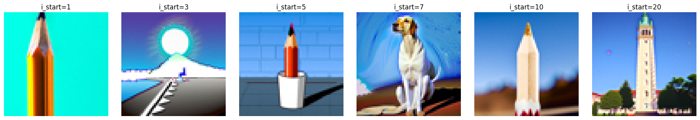
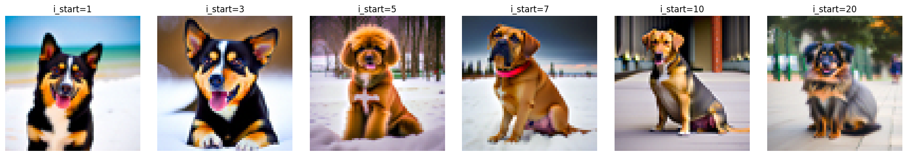
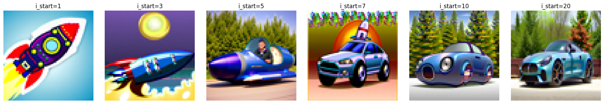
A1.8 Visual Anagrams
In this section, I generate a visual anagram: a single image that matches one prompt when viewed normally, but becomes a different, coherent image when rotated 180° (flipped upside down). The key trick is that during every reverse-diffusion step, I enforce consistency with two prompts under two views of the same latent image. Concretely, the “upright” view is guided by Prompt A, while the “flipped” view is guided by Prompt B. By combining the two guidance signals at each timestep, the final sample is forced to contain features that can be explained by Prompt A in the upright orientation and by Prompt B in the flipped orientation.
Denoising with classifier-free guidance (CFG). For a given timestep t and latent
image x_t, the diffusion UNet predicts noise. CFG improves prompt adherence by mixing
an unconditional and conditional prediction:
ε̂ = ε̂uncond + s · (ε̂cond − ε̂uncond), where s is the guidance scale.
Visual-anagram update rule. At each timestep, I compute two CFG noise estimates:
- Upright branch (Prompt A): ε̂A = CFG(UNet(xt, t, Prompt A)).
- Flipped branch (Prompt B): first rotate the current latent by 180°, x̃t = flip(xt), then compute noise under Prompt B, ε̃̂B = CFG(UNet(x̃t, t, Prompt B)), and rotate the noise prediction back, ε̂B = flip(ε̃̂B).
Since ε̂A and ε̂B are now expressed in the same (upright) coordinates, I combine them by simple averaging:
ε̂final = (ε̂A + ε̂B) / 2
Finally, I use ε̂final in the standard DDPM reverse update to obtain xt−1. Intuitively, the model is “pulled” toward satisfying Prompt A in the normal view while simultaneously being “pulled” toward satisfying Prompt B when the image is flipped. Because this constraint is applied at every timestep, the illusion is not a post-processing trick; it is baked into the sampling trajectory.
Qualitative observation: When the prompts are too semantically different, the averaged guidance can create compromise artifacts (e.g., muddier textures or ambiguous shapes). Prompts with compatible global composition (similar scene layout) typically produce stronger, cleaner anagrams.
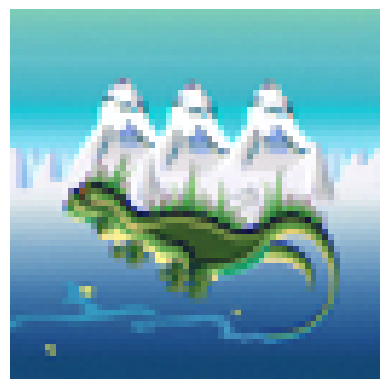
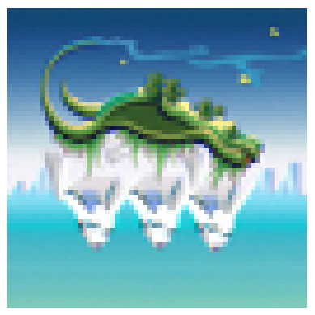
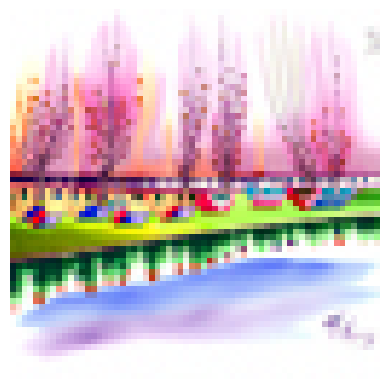
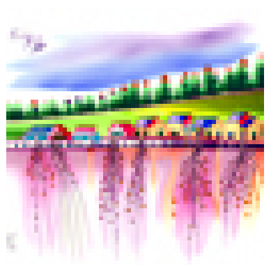
A1.9 Hybrid Images (Diffusion Edition)
In this section, I create hybrid images, where the output appears like one concept when viewed from far away (or blurred), but reveals a different concept when viewed up close. This mirrors the classic hybrid-image construction (low-pass one image + high-pass another), except here I perform the “frequency split” in diffusion guidance space rather than directly combining two RGB images.
Step 1 — compute guided noise for both prompts. For the same latent xt and timestep t:
- ε̂A = CFG(UNet(xt, t, Prompt A))
- ε̂B = CFG(UNet(xt, t, Prompt B))
Step 2 — separate frequencies using a Gaussian low-pass filter. Let LP(·) be a Gaussian blur operator (implemented with the project-recommended parameters, e.g., kernel size 33 and sigma 2). Then:
- Low-frequency component: ε̂low = LP(ε̂A)
- High-frequency component: ε̂high = ε̂B − LP(ε̂B)
Step 3 — recombine into a hybrid guidance signal. The final noise estimate used for the DDPM reverse step is:
ε̂hybrid = ε̂low + ε̂high
This construction gives Prompt A control over the global structure (overall shapes, layout, large-scale shading), while Prompt B injects fine details (textures, edges, small semantic features). Because the combination happens inside the sampling loop, the diffusion process learns to satisfy both constraints over time: the sample stabilizes its coarse composition according to Prompt A while progressively sharpening with Prompt B’s high-frequency details.
How I evaluate the illusion: To verify the hybrid effect, I visualize the result at multiple scales: (1) zoomed out / downsampled (emphasizes low frequencies) and (2) zoomed in (reveals high-frequency details). A strong hybrid should clearly shift “interpretation” depending on viewing distance.
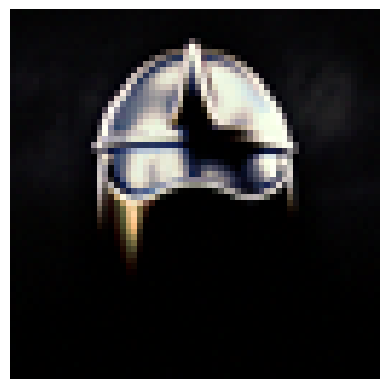
Low-frequency prompt: a realistic portrait of a knight wearing polished silver armor
High-frequency prompt: a realistic image of a wolf standing on a cliff under a full moon
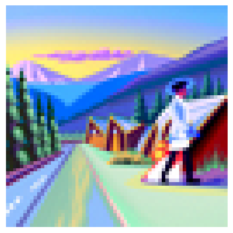
Low-frequency prompt: an oil painting of a snowy mountain village
High-frequency prompt: a man wearing a hat
A2. Optical Illusions
A2.1 Visual Anagrams
A visual anagram is a single generated image that can be interpreted as two different concepts under two different “views” (e.g., flipped/rotated). The key trick is to compute denoising guidance under both views at every timestep and then combine the resulting noise predictions into a single update. This forces the final image to simultaneously satisfy both prompts, but in different viewing conditions.


A2.2 Hybrid Images (Diffusion Edition)
Hybrid images combine low-frequency structure from one concept with high-frequency details from another. In the diffusion setting, the idea is to make different frequency bands “agree” with different prompts during sampling. The low-frequency component stabilizes global layout (pose, silhouette, composition) while the high-frequency component injects fine textures and edges.